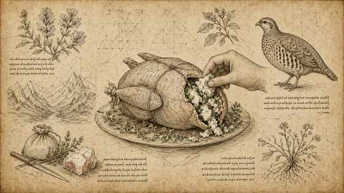
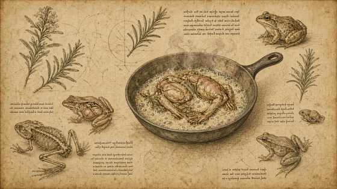
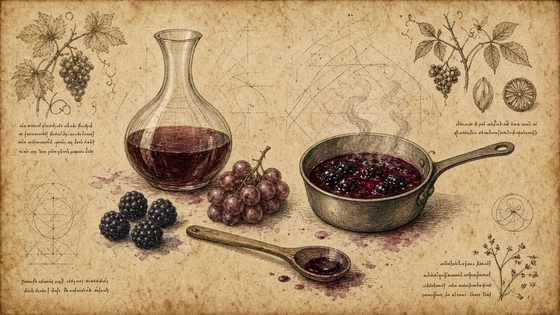
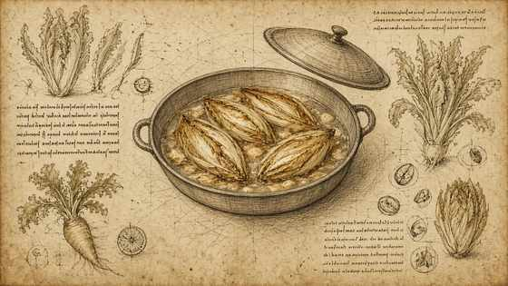
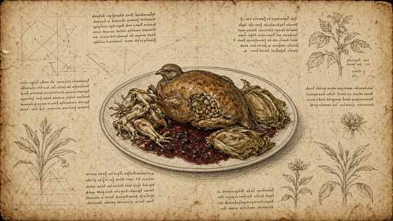

01
Farcire la pernice con lardo di montagna e chiudere; cosce a parte in burro.
Stuff the partridge with mountain lard and close; legs separately in butter.

MasterChef Magazine · Ricetta VI · Tutorial
MasterChef Magazine · Recipe VI · Tutorial
Pernice farcita di lardo di montagna, rane al burro e rosmarino, salsa Amarone e frutti di bosco, indivia belga. — struttura Fooby, tavole Leonardo; quantità solo se dette nel video.
Partridge stuffed with mountain lard, frogs in butter and rosemary, Amarone–berry sauce, Belgian endive. — Fooby structure, Leonardo plates; quantities only if spoken on camera.
← Scheda del quaderno ← Notebook cardFarcire la pernice con lardo di montagna e chiudere; cosce a parte in burro.
Stuff the partridge with mountain lard and close; legs separately in butter.

Rane in padella con burro e rosmarino (stile francese).
Frogs in the pan with butter and rosemary (French style).

Salsa di Amarone e frutti di bosco.
Amarone and berry sauce.

Brasare l’indivia belga in padella.
Braise Belgian endive in a pan.

Tagliare e impiattare con olio, maggiorana e mostarda richiamata.
Carve and plate with oil, marjoram and mustard as recalled.
